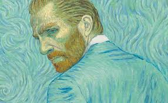
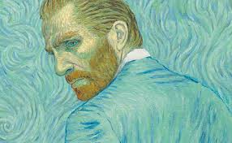

Portifolio de Trabalhos
Título do Trabalho 1
Este trabalho de fotografia foi desenvolvido com o objetivo de capturar momentos únicos e transmitir emoções através da imagem. A proposta é explorar diferentes ângulos, iluminação e composições para destacar a beleza do instante fotografado. A técnica utilizada busca valorizar tanto os detalhes quanto a naturalidade da cena, proporcionando ao espectador uma experiência visual imersiva. O foco está em transmitir autenticidade e contar uma história por meio de cada clique. Mais do que apenas registrar, a fotografia aqui tem a função de eternizar momentos e transformá-los em arte, revelando novas perspectivas do cotidiano.
 

Título do Trabalho 2
Este trabalho de fotografia foi desenvolvido com o objetivo de capturar momentos únicos e transmitir emoções através da imagem. A proposta é explorar diferentes ângulos, iluminação e composições para destacar a beleza do instante fotografado. A técnica utilizada busca valorizar tanto os detalhes quanto a naturalidade da cena, proporcionando ao espectador uma experiência visual imersiva. O foco está em transmitir autenticidade e contar uma história por meio de cada clique. Mais do que apenas registrar, a fotografia aqui tem a função de eternizar momentos e transformá-los em arte, revelando novas perspectivas do cotidiano.